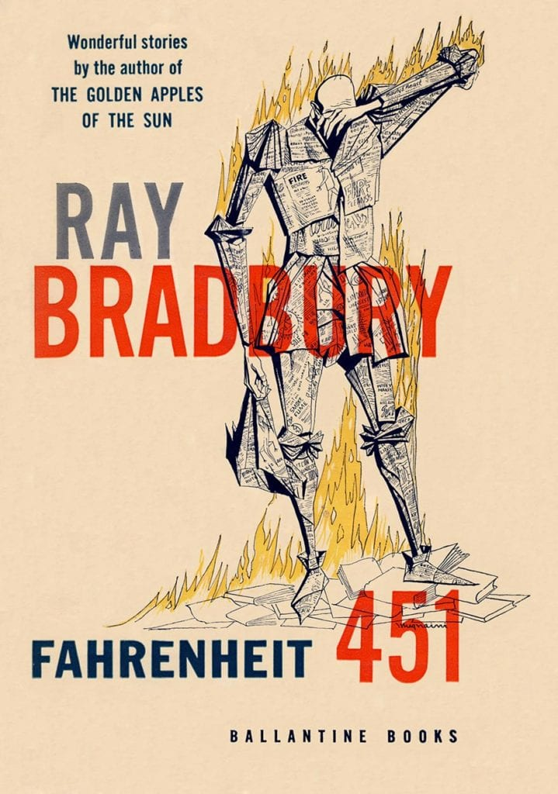

Fahrenheit 451 by Ray Bradbury

Fahrenheit 451 is about a world where books are banned. In that world, firefighters burn books instead of saving people from fire. Discipline is declining; philosophy, history, and languages have been abolished in schools; less and less time is devoted to English and spelling; and, eventually, these subjects are abandoned altogether. People are being completely brainwashed and taught to neglect the things that truly matter.
The story revolves around a firefighter named Guy Montag, who meets a girl named Clarisse McClellan. Clarisse is the one who shows Montag just how miserable his life really is. She makes him question the way he lives and the work he does, and that changes everything.
The whole process was captivating: Montag's thoughts before everything happened, the stupidity of his wife and her friends, and Beatty's brilliance. He is actually a character I would love to understand better. Was he once an intellectual who took a wrong turn, or someone who went astray and then deliberately educated himself in order to hunt down dissenters?
I also liked how Montag's ignorance was shown so clearly: partly because of his lack of education, and partly because of the kind of world he lived in, where even if you wanted to know more, you almost couldn't. When he ran out of Faber's house toward the river, I felt as if I were trying to escape the Mechanical Hound myself. Did Montag survive, or did the Mechanical Hound catch him? I'll let you get the answer for yourself.
One of my favorite moments was Faber's fear of speaking to Montag a year after their chance encounter. It makes perfect sense. I mean, books are banned, and then a man whose job is literally to burn them on behalf of the state calls you and asks, "Do you have a Bible?" That was hilarious.
And the ending was just incredible. The philosophical conversations and the professors from great universities who had become fugitives and guardians of history were amazing.
Overall, absolutely brilliant.
SPOILER: I know this is a spoiler, but I simply cannot write this without mentioning it: if Clarisse really did die because a bunch of messed-up teenagers decided to run her over for fun, I am literally going to cry...